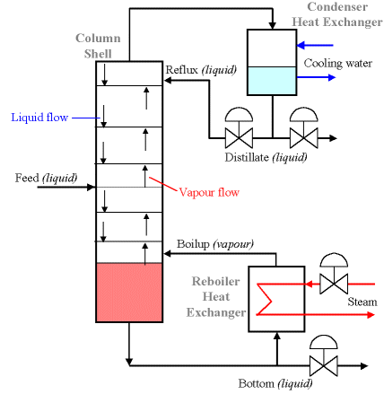

|
You are here : Control System Design - Index | Simulations | Distillation Column Control Distillation Column ControlSystem DescriptionThe process of distillation should be familiar to most readers. The
basic concept is that we can separate a mixture of two pure liquids with
different boiling points by heating the mixture to a temperature between
their respective boiling points. For example, water boils at 100°C and
ethanol boils at around 83°C at atmospheric pressure. If we heat the
mixture to say 92°C, the ethanol will boil and be transformed into
vapour (which is collected and condensed) while the water will remain as
a liquid. This phenomenon is usually quantified by the relative
volatility of the two components.  The distillation column itself is made up of a series of stacked plates. A liquid feed containing the mixture of both liquids enters the column at one or more points. The liquid flows over the plates, and vapour bubbles up through the liquid via holes in the plates. As liquid travels down the column, vapour comes in contact with it many times (due to the multiple plates). This is the critical process in distillation columns. The liquid and vapour phases are brought into contact because as one molecule of higher boiling material converts from vapour to liquid phase by energy release, another molecule of the low boiling material utilises the free energy to convert from liquid to vapour phase. The base of the distillation column contains a large volume of liquid, which is mostly the liquid with higher boiling point (in our example, this would be water). Out of the base flows some of this liquid, some of which is heated in the reboiler and returned to the column. This is called the boilup, and is labeled V. The remaining liquid is the bottom product, labeled B. Some vapour escapes from the top of the column and is returned to a liquid state in the condenser. Some of this liquid is returned to the column as reflux L, and the remainder is the top product or distillate D. Vapour and liquid phases on a given plate approach thermal, pressure and composition equilibrium to an extent depending upon the efficiency of the plate. Overview of the ExampleIt is recommended that you follow the example in order, but you may skip ahead if you wish:
Photos of the SystemYou can view photos of real distillation columns here. AcknowledgementsMuch of the work in preparing this example was done by other people. Julio Rodreguez at the Department of Chemical Engineering, University of Sydney provided the background information for the example. Greg Adams at the Department of Electrical & Computer Engineering, University of Newcastle also provided a great deal of expertise in this field.
|